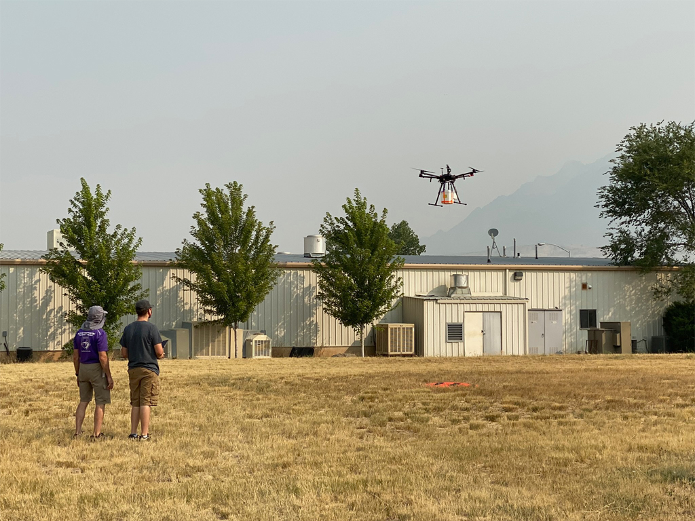

Me
My name's Zachary Kennedy, but you can just call me Zack! I'm 22 years old, and a student of Astrophysics at Weber State University in Ogden, Utah. I'm a big ethusiast of space, technology, and adventure! I first started programming when I was 12 years old, and was self taught through YouTube Videos. When I was young, I was engrossed by video games, and wanted to be a video game programmer. As I matured, I found my true calling with my facination of Space, and humankind's exploration of the stars!
When I'm not busy doing schoolwork or spending time with family or girlfriend, I'm usually working or participating in a number of research activities. I'm currently employed by Weber State University as a Telescope Operator, and I operate the KTPO Remote Telescope atop of Tracy Hall at Weber State. My responsibillites include taking hundreds of exposure images of asteroids or stars, then performing aperature photometry on those to get data that can be used to make light curves or finding the periods of Asteroids.
Featured Research
HARBOR
In addition to my duties as a telescope operator, I'm also a member of HARBOR, Weber State's high altitude atmosphereic balloon team. We launch high altitude balloons carrying instruments to measure the atmosphere in and around Utah. Besides participating in our balloon launches, I'm also a key memeber of our hardware development team. More specifically, the creation and assembly of the MSA (formally known as the mini-MSA). I worked closely on the software of the MSA. You can read more about it here.
Exoplanet Research

I'm also doing exoplanet research this summer, running simulations on potentially habitable exoplanets from NASA's exoplanet database. I created software to aid me in the research. My research is funded by a grant from Weber State's undergraduate research awards. You can read more about my research here.